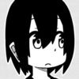
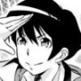

This week's Weekly Shonen Champion posting order & comments from the author.

Rororro!

I started to drink iced coffee at home! What a life pleasure.
Rokudo no Onnatachi

I went to the Edo-Tokyo Museum. It was exciting and interesting.
Yuuenchi Baki Gaiden

I am appointed as a jury member of the Nikkei Hoshi Shinichi Literary Award. I loved Mr. Shinichi Hoshi's works since I was a teenager, so I am looking forward to what kind of works I can see (Yumemakura).
Sachio-kun

I recommend you the book " 全猿肩組大全"(Monkeys and Shoulders) written by Mr. Nishigara, it is interesting.
Yowamushi Pedal

I will be in the J-Sports' Tour de France (3rd Stage) broadcast as a guest again this year on 8th July! Look forward to it!
Atsumare! Fushigi Kenkyuubu

I saw a meteor for the first time in my life. I was shocked seeing a light crossing at such high speed.
Dorakon!

I like to draw a lot of boobs, since they are the one of the focus on this series. But I also like to draw asses.
BEASTARS

I ate a cake which had alcohol on it and I became numb...
Mairimashita! Iruma-kun

I bought a small fan. Finally!
Appare! Urayasu Tekkin Kazoku

I went to the retirement event that Riki Choshu held. I was so deeply moved by the experience that I embraced my wife with a huge smile. Thank you so much.
Harigane Service Ace

Volleyball Nations League seems to be starting. Do your best, Japan representatives!
'Ippon' Again

Thank you for the 'Tsugi ni Kuru Manga Award' nomination. I ask you to vote there.
I Want to be Told by a Pretty Junior

This series will be serialized in Mangacross (Mangakurosu) on 18th July! Follow us on Twitter: @kawamurataku
Ashigei Shoujo Komura-san

I voted for the general elections.
Magical Girl Site

I don't want to write about negative stuff, but the Tapioca shop that opened nearby in the neighborhood is not really good...
Boryaku no Panzer

Thank you very much for all your illustrations of Panzer! I will check them all!
Junior

I am trying my best!
Best Picture

We are really excited for our plane trip to Paris! (Onuma).
I hope you enjoy our work. I am going to France tomorrow to receive the money prize. (Uchida)
I hope you enjoy our work. I am going to France tomorrow to receive the money prize. (Uchida)
Furutto on Thursday

I found a pasta restaurant that was extremely delicious but felt really unfriendly. Anyway, I like it.
Worst Gaiden Guriko
Hiroshi Takahashi & Ryuta Suzuki
Volume 2 will be released on 8th July. I hope it reaches many people from Hokkaido to Okinawa!